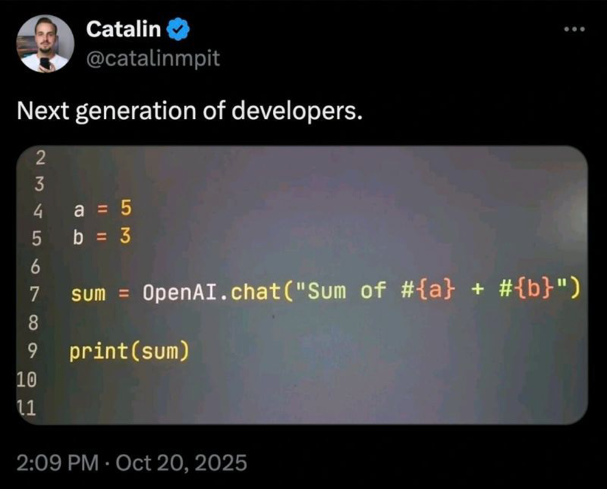

地端AIAgent+AutoGen
Token Intelligence無極限
老鮑伯
Agenda
What and Why is Agentic AI?
AutoGen for .NET
(v0.2.x) overview
Local LLM running options & caveats
Demo & Future vision
Slide URL
Resources & References
AutoGen & Agentic AI
AutoGen for .NET GitHub Repository
AutoGen for .NET (v0.2.*) Documentation
AutoGen .NET (v0.4-dev) Documentation
AutoGen (Python) v0.2 Documentation
🎞️ Exploring AI Agents with AutoGen in .NET
source code
📃 AutoGen: Enabling Next-Gen LLM Applications via Multi-Agent Conversation
📃 More Agents is All You Need
AutoGen, AG2, and Semantic Kernel: Complete Guide
🧑💻 Agentic AI Workshop - AutoGen
🧑💻 AgenticAI Practices - AutoGen & Semantic Kernel Demonstration
AutoGen to Microsoft Agent Framework Migration Guide
Assistant Agent & User Proxy Agent use cases explain
Tool call with local model using Ollama and AutoGen.Net
📚 AI Agent 開發：做與學 AutoGen 入門與進階
LLM Apps with .Net: Implement a Reflection Agent with AutoGen and SemanticKernel
Use AutoGen for Local LLMs
Agent-ChatRoom
StepWise
ML.NET
Microsoft.ML.GenAI.Core
nuget source code
Local LLM Related Resources
📃 Small Language Models are the Future of Agentic AI
📃 On the Fundamental Limits of LLMs at Scale
What is Quantization and Why It Matters for AI Inference?
How OpenAI used a new data type to cut inference costs by 75%
How To Calculate GPU VRAM Requirements for an Large-Language Model
Semantic Kernel: One Client for OpenAI, Azure & Local LLMs
NVIDIA App Driver Comparisons
How Small Language Models Are Key to Scalable Agentic AI
Agentic AI with OpenVINO Model Server
ROCm 7.9 Technology Preview: ROCm Core SDK and TheRock Build System
現僅蘋果M1力挺 UMA已消失在處理器世界？
AMD Ryzen AI Max+395: A Leap Forward in Generative AI Performance with Consumer PC
Strix Halo (395)本地运行LLM测试
⁉️ Conversation roles must alternate user/assistant/user/assistant/… #2112
⁉️ ROCm on WSL #5275
⁉️ ROCm is unable to load TensileLibrary_lazy_gfx1201.dat - falls back to tensil. #1163
Get started with Phi Silica
Q & A
Any Questions?
🙋♂️🙋♀️🙋

Sponsors